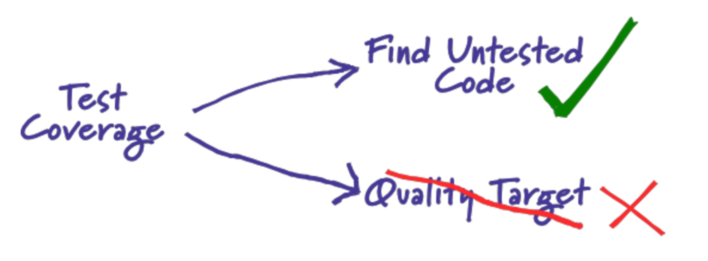
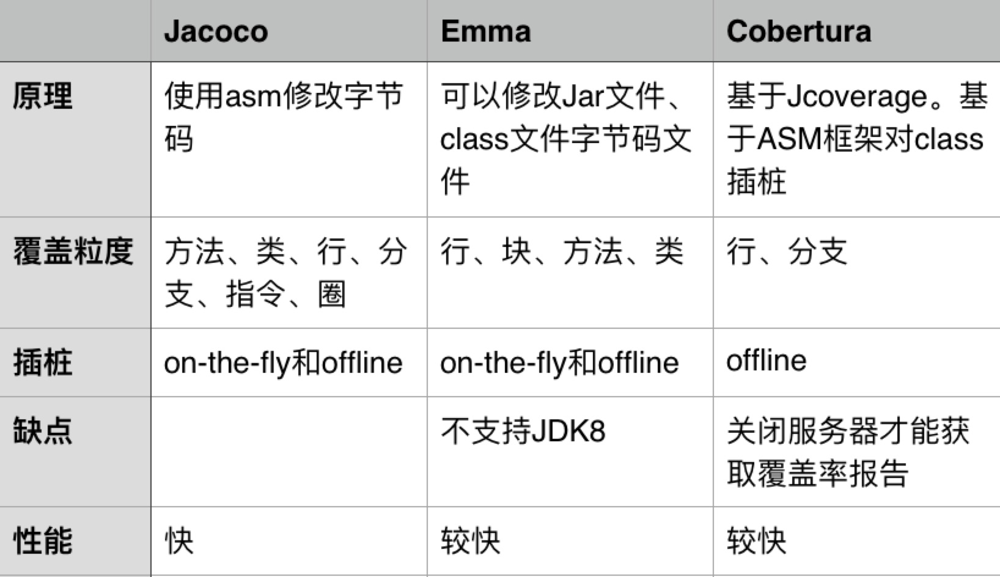
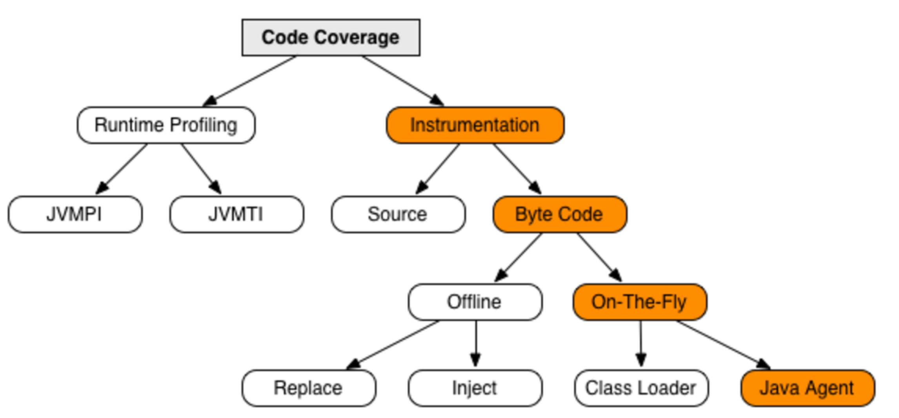

概念
代码覆盖率 ＝ 代码的覆盖程度，一种度量方式。
Martin Fowler（重构那本书的作者）曾经写过一篇博客来讨论这个问题，他指出：把测试覆盖作为质量目标没有任何意义，而我们应该把它作为一种发现未被测试覆盖的代码的手段。

代码覆盖率的意义
1）分析未覆盖部分的代码，从而反推在前期测试设计是否充分，没有覆盖到的代码是否是测试设计的盲点，为什么没有考虑到？需求/设计不够清晰，测试设计的理解有误，工程方法应用后的造成的策略性放弃等等，之后进行补充测试用例设计。
2）检测出程序中的废代码，可以逆向反推在代码设计中思维混乱点，提醒设计/开发人员理清代码逻辑关系，提升代码质量。
3）代码覆盖率高不能说明代码质量高，但是反过来看，代码覆盖率低，代码质量不会高到哪里去，可以作为测试自我审视的重要工具之一。
代码覆盖率工具
目前Java常用覆盖率工具Jacoco、Emma和Cobertura

插桩原理

主流代码覆盖率工具都采用字节码插桩模式，通过钩子的方式来记录代码执行轨迹信息。其中字节码插桩又分为两种模式On-The-Fly和Offine。On-The-Fly模式优点在于无需修改源代码，可以在系统不停机的情况下，实时收集代码覆盖率信息。Offine模式优点在于系统启动不需要额外开启代理，但是只能在系统停机的情况下才能获取代码覆盖率。 基于以上特性，同时由于公司使用JDK8，我们采用Jacoco来获取集成测试代码覆盖率，单元测试使用Cobertura。
On-The-Fly插桩 Java Agent
JVM中通过-javaagent参数指定特定的jar文件启动Instrumentation的代理程序 代理程序在每装载一个class文件前判断是否已经转换修改了该文件，如果没有则需要将探针插入class文件中。 代码覆盖率就可以在JVM执行代码的时候实时获取。
典型代表：Jacoco
On-The-Fly插桩 Class Loader
自定义classloader实现自己的类装载策略，在类加载之前将探针插入class文件中
典型代表：Emma
Offine插桩
在测试之前先对文件进行插桩，生成插过桩的class文件或者jar包，执行插过桩的class文件或者jar包之后，会生成覆盖率信息到文件，最后统一对覆盖率信息进行处理，并生成报告。
Offline插桩又分为两种：
Replace：修改字节码生成新的class文件
Inject：在原有字节码文件上进行修改
典型代表：Cobertura
On-The-Fly和Offine比较
- On-The-Fly模式更加方便的获取代码覆盖率，无需提前进行字节码插桩，可以实时获取代码覆盖率信息
- Offline模式适用于以下场景：
- 运行环境不支持java agent
- 部署环境不允许设置JVM参数
- 字节码需要被转换成其他虚拟机字节码，如Android Dalvik VM
- 动态修改字节码过程中和其他agent冲突
- 无法自定义用户加载类
代码覆盖率的常用种类
代码覆盖程度的度量方式是有很多种的，常用的包括
- 语句覆盖(StatementCoverage)
- 判定覆盖(DecisionCoverage)
- 条件覆盖(ConditionCoverage)
- 路径覆盖(PathCoverage)
实践应用
单元测试覆盖率
目前有赞开发人员会写单元测试用例，为了能够引入持续集成，我们选取了Sonar+Cobertura来获取单元测试覆盖率。 我们将代码覆盖率绑定到代码编译阶段，这样每次代码编译就能够执行单元测试同时获取代码单元测试覆盖率
1 | <plugin> |
生成代码覆盖率文件以后，通过Jenkins SonarQube Scanner或者执行 mvn sonar:sonar 将该文件上传至Sonar 服务器，就可以解析该文件，生成图形化的界面
集成测试覆盖率
测试人员执行集成测试测试用例时（包括手工执行和自动化执行），我们需要代码覆盖率来发现测试用例设计的遗漏，及时补充用例来覆盖未被覆盖到的代码。
被测系统，在服务启动时，都会通过javaagent的方式做On-The-Fly插桩
被测服务器启动之后，测试人员手工执行测试用例，Jacoco Agent会实时将代码覆盖率信息传输给Jacoco Prase Server，该服务器保存了被测代码源文件以及编译后的目标文件，服务器会结合源文件、目标文件以及代码覆盖率信息生成图表化的覆盖率文件。 自动化执行测试用例完成之后，获取代码覆盖率信息，通过Jenkins Jacoco插件解析，获取图表化的覆盖率文件。获取代码覆盖率报告之后，结合git获取的本次代码变动信息，得到测试用例覆盖的变动文件的测试覆盖率统计信息。来分析是否有由于测试用例设计遗漏导致的代码没有覆盖或者是开发的无效代码导致该代码无法被覆盖，如果测试用例设计有所遗漏，可以对照的增加相应的用例；如果是无效代码可以删除。 自动化集成流程
业务开发完成之后，开发人员做单元测试，单元测试完成之后，保证单元测试全部通过同时单元测试代码覆盖率达到一定程度（这个需要开发和测试约定，理论上越高越好），开发提测。
测试人员根据测试用例进行测试（包括手工测试和自动化测试），结合git获取本次变动代码的覆盖率信息。行覆盖率需达到100%，分支达到50%以上，这个需要具体场景具体分析。
测试通过之后，代码合并至主干，进行自动化回归。
回归测试通过之后，代码可以上线。
基于这套流程，我们可以将单元测试代码覆盖率和集成测试代码覆盖率整合到持续集成流程中，如果代码覆盖率达不到我们设置的某个值时，可以终止流程继续下去获取需要人工确认之后，继续流程。
总结
1)覆盖率数据只能代表你测试过哪些代码，不能代表你是否测试好这些代码。 2) 不要过于相信覆盖率数据，也不要盲目追求代码覆盖率，更不要只拿代码行覆盖率来考核测试人员。
没有工具是万能的，也没有工具使用起来是没有代价的。 测试人员盲目追求代码覆盖率往往会适得其反，应该想办法设计更多更好的案例，哪怕多设计出来的案例对覆盖率一点影响也没有。
参考文档
https://blog.csdn.net/hwhua1986/article/details/56281158 https://blog.csdn.net/qq_30953277/article/details/52174482